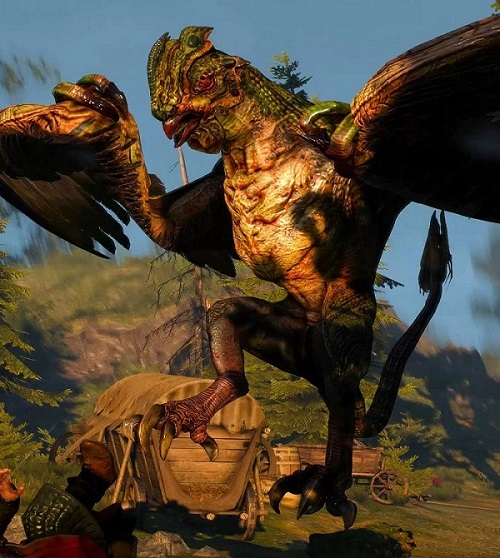

| Home Basilisk | ||
|---|---|---|
|  | Bestiary Description:In memory of the noble knight Roderick, slain during a valiant struggle against a basilisk. Let's hope the beast choked on his bones. -Gravestone inscription, Vizima cemetery. Contrary to popular belief, baslisks cannot turn anything to stone with their gaze. That is a small comfort, however, given that their acid, venom, claws and teeth provide them many other ways to kill. | |
| Location: Random locations | ||
| Vulnerable Against: Golden Oriole, Grapeshot, Draconid Oil, Aard | ||